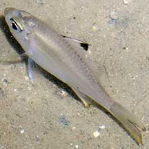
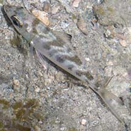
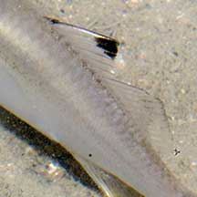
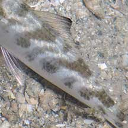
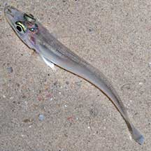
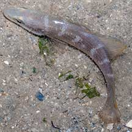
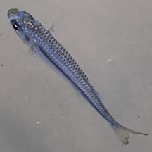

|
|
| fishes text index | photo index |
| fishes | Family Synanceiidae | Family Scorpaenidae | Family Batrachoididae | Family Serranidae |
| Small silvery
fishes How to tell them apart? updated Sep 2020 Several different kinds of small fishes are silvery. Here's more on how to tell them apart. |
 Kops' glass perchelet (Ambassis kopsii) Family Ambassidae |
 Mojarra Family Gerreidae |
|
 |
 |
|
| Dorsal fin deeply notched, with blackish tip. | Dorsal fin single continunous (not notched) with blackish tip. |
| More comparisons |
 Whiting Family Sillaginidae Long, slender body. Long snout. |
 Whiting Family Sillaginidae Long, slender body. Long snout. |
 Tropical silverside Atherinomorus duodecimalis Family Atherinidae Long, slender body. Short snout. Colours silvery grey, bluish to bright blue. |